Webpop
WebPop is a web platform that collects different trending articles concerning the world of pop culture. It refers to specific categories and the peculiarity lies in being able to enjoy reading through different typographic styles, including past and existent and future and imaginary. The user will find himself interacting with an "at hand" environment full of curiosities and being catapulted into different periods.
The idea
The idea stems from the creators' interest in wanting to create a virtual space focused on the new mass culture and in which to report reference articles from a variety of sources. From this concept came the choice of the name "WebPop", which is intended to unite the two words, and of the logo that takes its initials. These were associated with the two colors purple and yellow that characterized the shades of the default style.
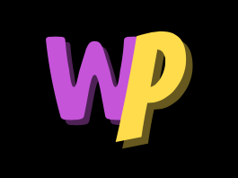
Webpop logo
#FFDE00
#C151E1
At the moment it remains a prototype such that there are only four articles from two different categories, Music and TV Series, but the aim would be to expand them, as made explicit in the second section of the home page,"What is webpop?". The fourth section, on the other hand, now hosts only the two categories with a link to the articles, but it will report the platform' news, thus new pieces that are constantly updated.
In addition and under directives, four themes have been set to fit the pages of the site and were inspired by the article History of Layout Design and Modern Newspaper & Magazins, which will be discussed in the following sections.
The purpose is to allow the user to explore their typographical forms as well as layout features, typical of the texts of each period, or imagined, such as that of the future; these have been adapted to the layout of the site thereby allowing visual continuity for the user.
How to navigate
Starting from the homepage, the user is invited to click on the logo to be introduced to the website. To make the click on the button more intuitive, it was decided to report the "tap on logo" command above it.
The second section acts as a simple information window related to the site. At this point, the user will be invited to choose whether to continue with the introduction to the themes or to sling over the articles. The theme change can be done at first by clicking on the card, from later times and in a more efficient way through the fab located in the lower right, and through the navbar from which it is also possible to return to the default theme.
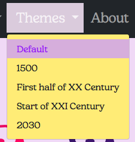
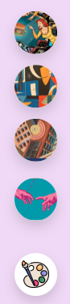
The fourth section is the articles section: the user will choose the preferred category and can continue reading the texts. It's possibile to see the Issues through the dropdown menu of the navbar too.
The articles are introduced by an "article information" section, which contains some relevant information about the texts, and can be closed by clicking on the bar.
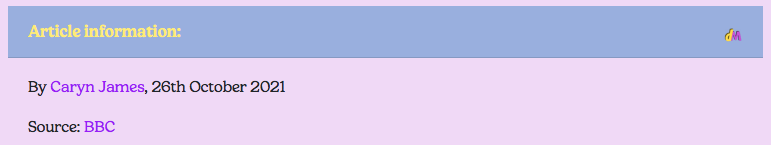
In addition, it will be possible to locate certain keywords through the "about articles" bar.
The user will be able to click on the desired word to retrieve it in the respective text; words with multiple occurrences will be tracked one at a time, and a button will be available to go back up if the user wants to view subsequent occurrences. However, if the articles are still closed, it is possible to click on the word as many times as there are occurrences, and once the article is opened with the "continue reading" function, these will all already be highlighted in the article.
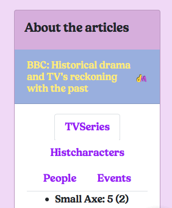
At the end of the reading, in order to have a better and not confusing view, it is possible to go back to the beginning of the text by clicking "go back" and closing the article to continue with the next ones.
The metadata can also be viewed on a reduced screen in the "about articles" section of the navbar.
Finally, in the about section of the navbar, you can visit the disclaimer with some information about the project or the current page.
Stylistic choices
The themes chosen were inspired by the article A History of Graphic Design: History of Layout Design and Modern Newspaper & Magazins.
Four different images were selected for their representation, referring to the idea of the pop genre and, in some cases, to pop art proper. In others, only the vastness of colors, the main element of the art movement itself, was adopted.
1500
The card of the past theme presents the iconic image of the approach of Adam and God's fingers depicted in Michelangelo's "Creation of Adam" in a pop art vision. The fresco scene evidently does not date back to the specific year linked to the manuscripts, but it certainly evokes an air of the past at first glance, which is why it was chosen for adoption.
Layout
The past theme is inspired by early medieval manuscripts, in particular the image shown below which refers to a Spanish breviary of 1450. The layout picks up on the motif of parchment, a material used for writing books, ornamental decorations, borders and justified layout. In the articles, a single long column with continuous text was made, and the spaces were adjusted to align the text on both sides. In addition, the feature of the red initial letter, in the case of articles embedded in four red lines to form a geometric figure, was added, occupying the space of the initial five lines on the left side; thus echoing the reference image in which there are three occupied lines.
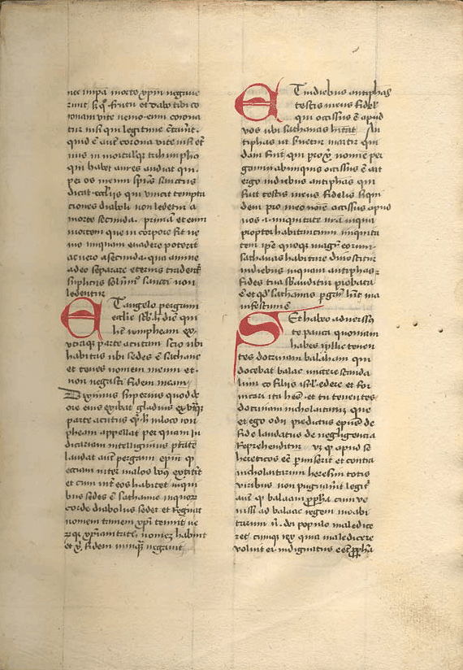
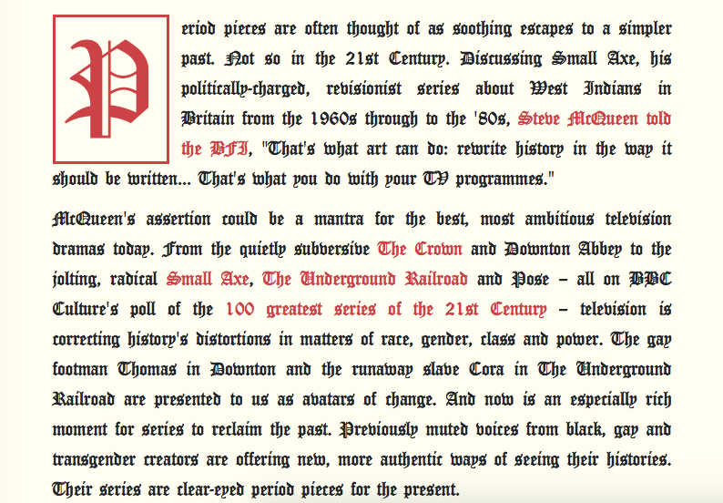
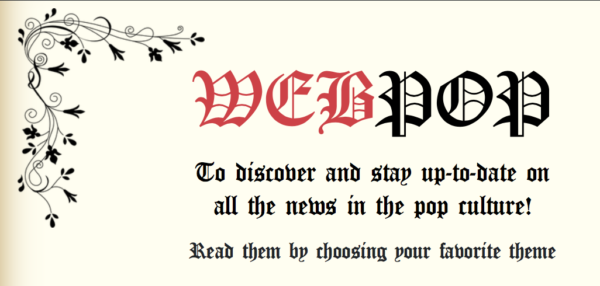
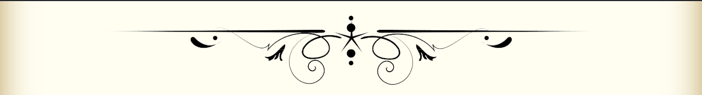
Other examples can be seen here.
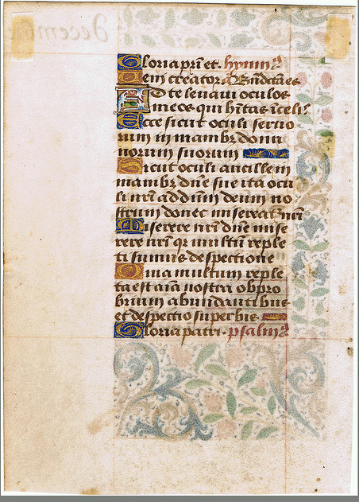
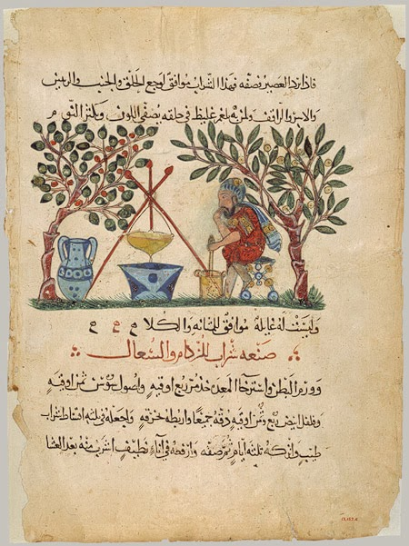
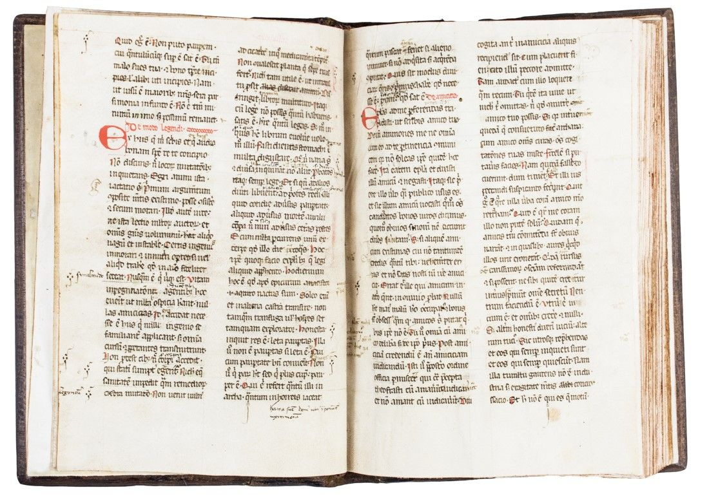
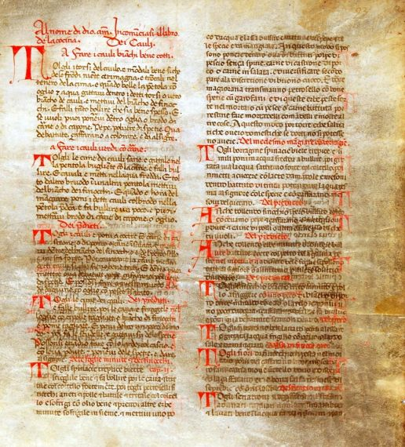
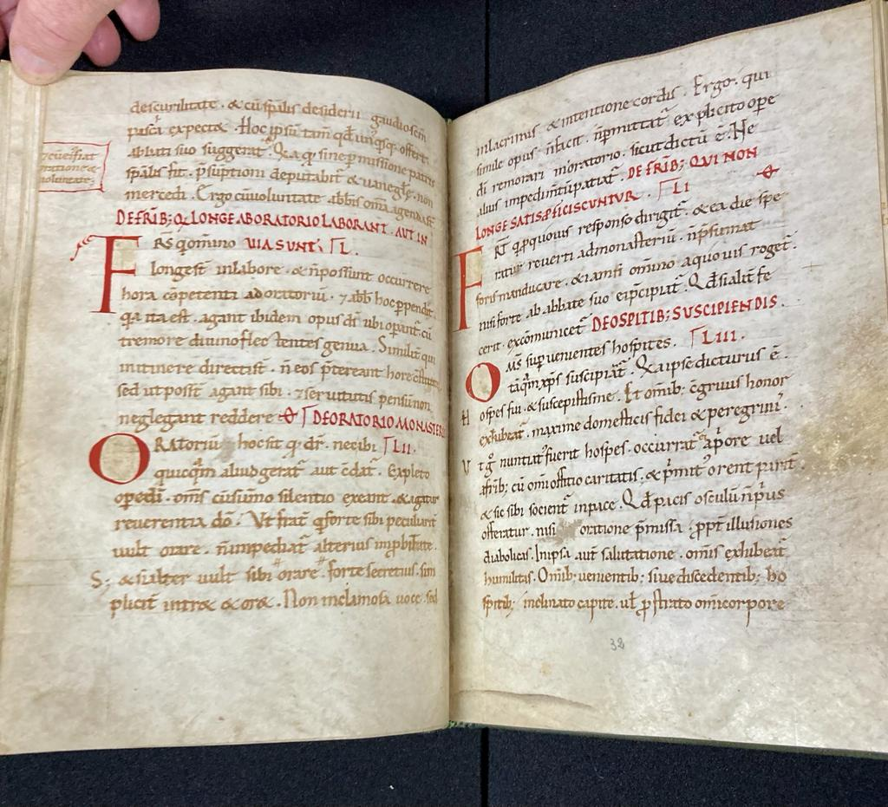
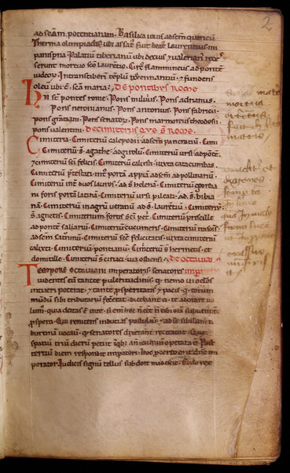
Font
Regarding the font, the research turned to all those fonts reminiscent of and inspired by local or European Gothic script, Canterbury in fact being a late medieval Gothic font. Considering the articles, the almost lack of spaces between lines and the font size chosen help to render the idea of density and fullness typical of medieval illuminated manuscripts.
Color
The following are the main colors chosen for the theme.
#c94444
#f5eca8
#697e66
First half of XX century
The artwork Skyscrapers and Tunnel selected for the theme card is done by Fortunato Depero, an italian futurist painter and designer.
The painting represents the overlapping of several dynamic planes, this kind of dynamicity marks the 20th century historic avant-garde movements, such as Futurism, Dadaism and Constructivisim. All of them also influenced the European layout and typography.
Thus, we decided to represent this theme as an example of the futurist current, in doing so we chose from the chapter Layout Design in 20th century one particular main image reference, namely a page of the futurist magazine Lacerba, published in 1914.
Layout
Among the most noticeable features, there is the intention to create visual images through peculiar typographical choices as the bold character of the font with the distorsion of some headlines, then there are the lines separator between the columns that organizes the space of the issue.
Other reference images:
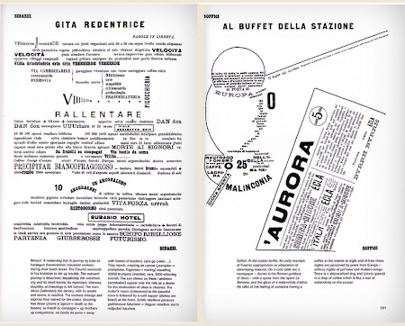 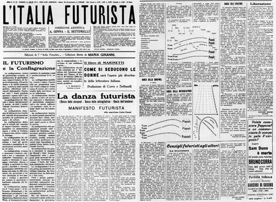
Font
We tried to repreduce some of these features, in order to emulate the character of the headlines we picked the Cinematografica Regular from dafont.com, which is characterized by a bold font weight and very minimum letter spacing as it was typical in the reference images.
While for the character used in the paragraphs we chose Leorio always from dafont website, this font was useful to get a similar feeling to the words typed with the typewriter.
For always reminding this feeling we also used a CSS effect for the headlines.
Color
As it regards the color palette, we chose tones from a very pale yellow to reproduce the color of the paper and we added light brown and grey to represent the other parts of the layout so that they did not contrast with the background color.
Color #F4F2DC
Color #C1BFAC
Color #D7D8BF
Color #E8E8E8
Start of XXI century
The artwork El Adios de las Niñas (The Girls' Goodbye) selected for the theme card is done by Enrique Pichardo, a mexican contemporary painter. This painting represents the meeting of the symbolisms of the Pre-Hispanic past and indigenous traditions with the modern Expressionism.
Then, as the painter re-thought the past in the modern sense, similarly it is happened with the modern layout and design magazines, the topic of this theme.
Layout
Here we wanted to create a sort of contemporary layout, so from the chapter Using Layout Grids Effectively we took as the main image reference an example of a modern design from a magazine.
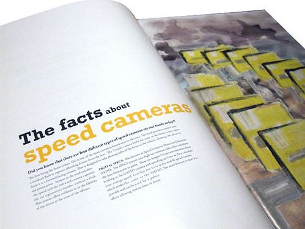This kind of design is characterized by a simple and geometrical composition, also the colors in the headlines recall the ones from the abstract image placed on the right page. In that chapter this particular layout is accompanied by the following description: "An elegant integration of type and image via color".
Thus, we focused on reproducing a simple layout, inserting a decorative image that conveys some contrastive colors of the palette, and choosing very clear fonts in the shapes that offer the maximum readability.
Other reference images:
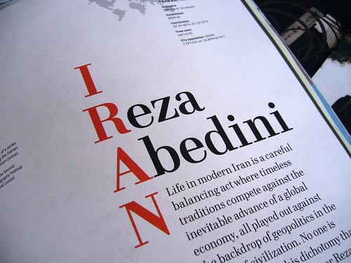 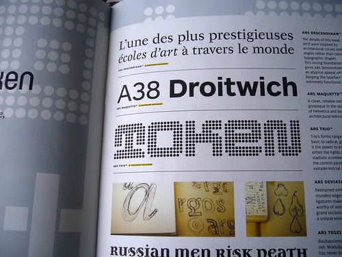 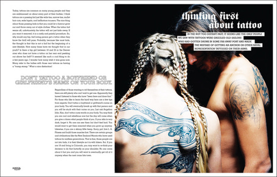Font
For the headlines we used Mermaid from dafont.com, that is a serif font with round and smooth curves, while for the paragraphs we picked the classical font Oxford from 1001freefonts, that is really close to the standard used in the modern magazines.
Color
Lastly for the color palette, we tried to get a similar yellow/orange as in the main reference image and we used it for some words of the headlines combined to a CSS effect, then we selected some darker colors to realize the contrast between yellow and the darker ones.
Color #212529
Color #C9C9C9
Color #FFDE00
Color #A89D8E
2030
The card representing the future theme is again inspired by pop art.
Female astronauts look amusedly at a hamburger floating in space: no specific source of the image was found, probably just wanted to recreate a design manifesting the spread of fast food conjugated with early space travel between the 1950s and 1960s; but we like to think that the hamburger theme was inspired by the initiative of astronaut Terry Virts who, in February 2015, tweeted a photo of his "space cheeseburger"" eaten while aboard the International Space Station - Expedition 42. The mixture consisted of beef paddy, cheese, tomato paste and Russian mustard on a tortilla.
Of course, the depiction of the sandwich in the card image is surreal; introducing bread inside a spacecraft is absolutely dangerous because of the crumbs, which is why Virts opted for the tortilla.
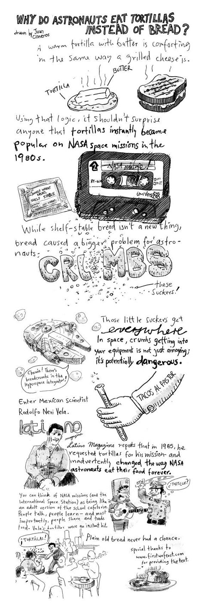
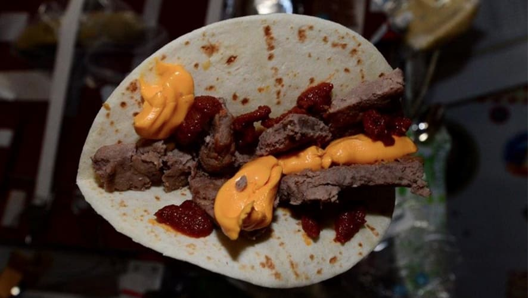
Layout
Elements of the "Star Wars"" movie saga were chosen for the realization of the future theme. The fictional galaxy in a timeless space that is almost certainly futuristic meets well with the idea of the future had in mind.
The layout is inspired by the original opening titles or “opening crawl” of the series: words float in a space background, the title "WebPop" features a laser effect taking up the motif of lightsabers, but only in the articles does the effect recall the saga's introduction; the text, arranged in a justified column and slanted, is scrolled upward by the user's scroll recalling the effect of the rising words from the film.
 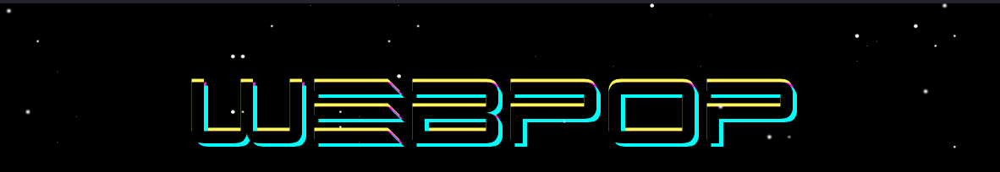
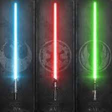
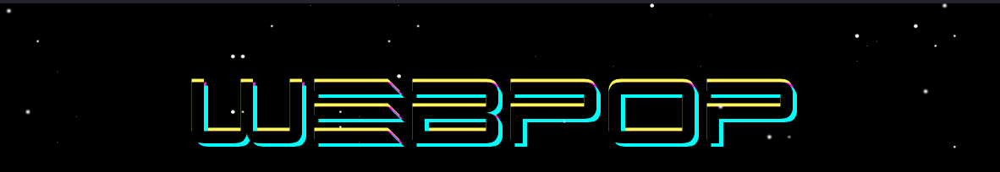
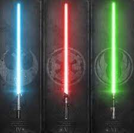
 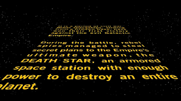
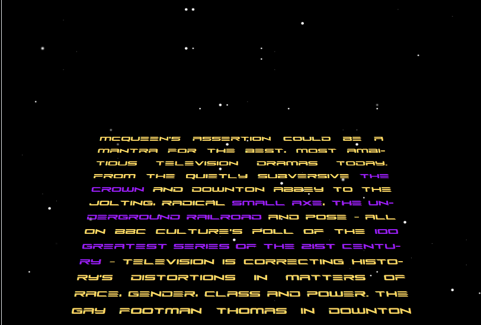
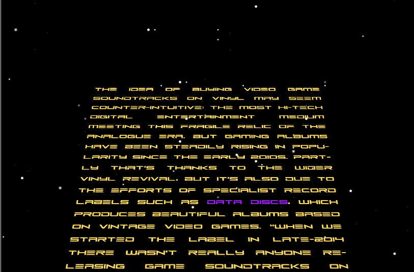
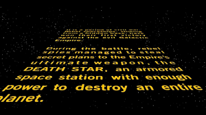
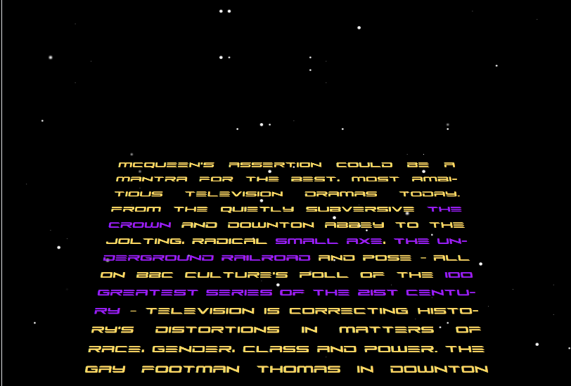
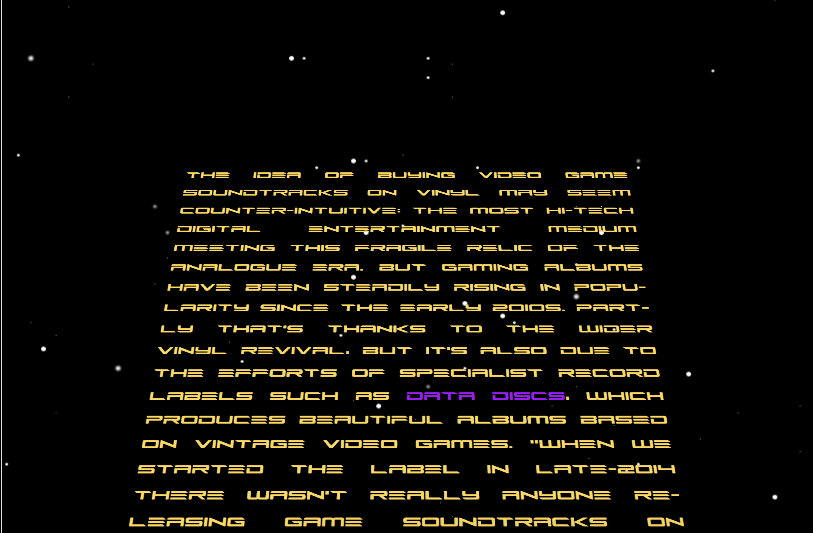
Font
Regarding the font, it was decided to use a different one from the one proposed in the saga.
The Future Z font more easily gives the idea of the future because of its curves and edges, only the yellow color turns out to be a reminder of the saga.
Color
The following are the main colors chosen for the theme.
#9400ff
#9aaee2
#ffed5e
#feda4a
About us
The team is composed of Carmela Santaniello and Ludovica Russo, who both worked on the complete realization of the site, from idea to design, dividing the themes and topics. After an initial phase of collecting materials, inspirations and ideas, everything was implemented through the structure of the pages and the work was divided by some of their parts. In particular, Carmela was responsible for selecting the articles regarding the Music category and the themes of futurism and the present on all site pages. Conversely, Ludovica selected the articles regarding the TV Series theme and worked on the past and future themes on all pages of the site.
The default theme was developed by both of them.
The structure of the various parts of the platform was created through the use of Bootstrap.
Lastly, the parts pertaining to the interactivity of the site, as well as the construction of the metadata structure in the article section, were selected from various sources from which we were inspired. Look at the sitography to learn more
Sitography
- 1stDibs - https://www.1stdibs.com/fr/
- 1001freefonts - https://www.1001freefonts.com/
- Arte.it - https://www.arte.it/
- BBC - https://www.bbc.com
- Bootstrap - https://getbootstrap.com/
- Canstockphoto - https://www.canstockphoto.com
- Canva - https://www.canva.com
- Codeopen - https://codepen.io/
- Dafont.com - https://www.dafont.com/it/
- Firstwefeast - https://firstwefeast.com/eat/2015/02/space-cheeseburgers-are-pure-struggle
- Font Awesome - https://fontawesome.com/
- Guity Novin's blogspot - http://guity-novin.blogspot.com/
- HTML.it - https://www.html.it/
- Nasa - https://www.nasa.gov/content/space-cheeseburger/
- Sitepoint - https://www.sitepoint.com/
- Stackoverflow - https://stackoverflow.com/
- The Guardian - https://www.theguardian.com/
- The Manual - https://www.themanual.com/
- VectorStock - https://www.vectorstock.com/
- W3schools - https://www.w3schools.com/